AI 不再凭空发挥
每个任务自带描述、验收标准和实施计划。Agent 在写代码之前先说清楚要做什么，你读完再放行。
Backlog.md 把任务、验收标准、实施计划和执行记录写成仓库里的 Markdown 文件。没有数据库，没有黑盒。AI 负责拆解与执行，你在三个关键节点审查批准。
$
npm i -g @kuwork/backlog.md
无需注册账号 离线可用 macOS、Linux、Windows
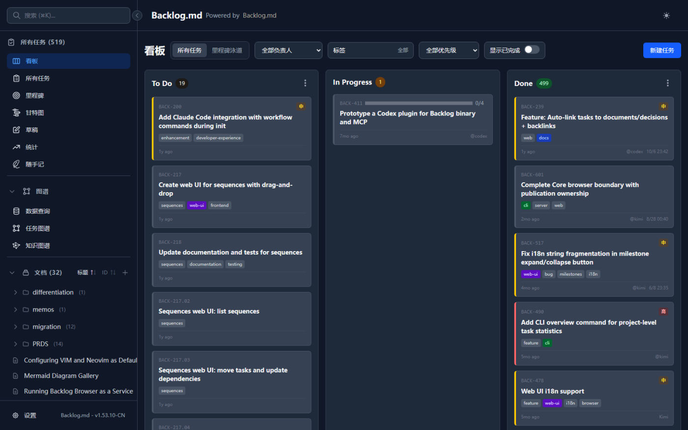
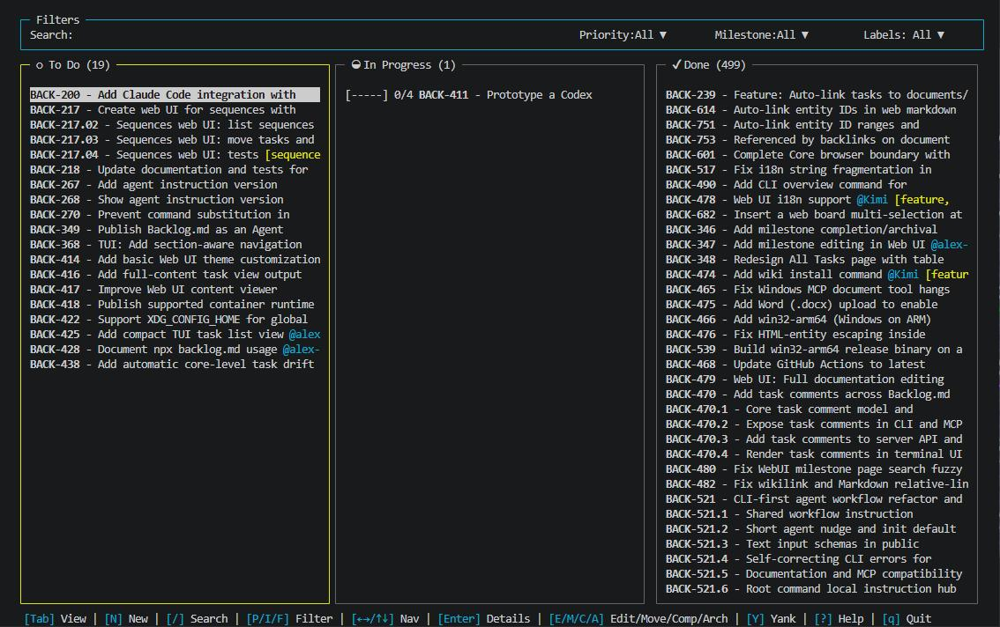
每一次
AI
执行
都留在
你能审查的
文件里。
任务
是可读的
Markdown，
进度
是可审的
Git
diff，
知识
沉淀成
可查的
Wiki。
把需求丢给 Agent，它能写出能跑的函数。但它不知道接下来该做什么，不知道边界在哪里，也不会主动告诉你它替你做了哪些判断。上下文一长，方向就散了，最后你得花一个下午去读它改了什么。
每个任务是一份 Markdown 文件，包含描述、验收标准和实施计划。AI 在动手之前先写清楚要做什么，你批准之后它才写代码。任务随代码一起进版本控制，可以被 diff、review、搜索和归档。
四个直接的结果：方向不跑偏、审查有抓手、数据不出机器、知识能累积。
每个任务自带描述、验收标准和实施计划。Agent 在写代码之前先说清楚要做什么，你读完再放行。
规格、计划、结果分别可以批准。方向错了在写第一行代码之前就能拦住，而不是等到 review 几千行 diff。
全部存在项目本地的 Markdown 文件里。没有云端账号，没有订阅，离线可用，Git 也是可选的。
LLM Wiki 把任务、文档和决策沉淀成可查询的项目记忆。换会话、换人，上下文不用从零重建。
这个项目从需求到发布的每一步都记在自己的 backlog 目录里。下面的数字来自仓库当前的真实状态，不是示例数据：任务文件统计 tasks、completed、archive/tasks 三个目录，Wiki 页面统计 wiki 目录下除 sources 源材料镜像外的页面。
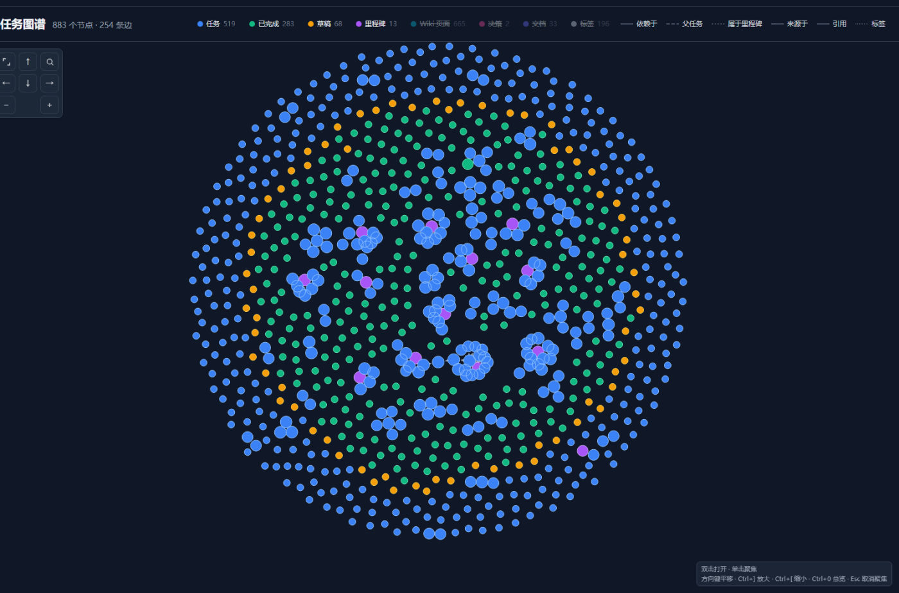
统计页把一年的完成情况摊成热力图和分布图；打开任意一个任务，它的依赖、子任务和所属里程碑会当场展开成一张关系图。两张图读的是同一批 Markdown 文件，不需要额外的报表系统。
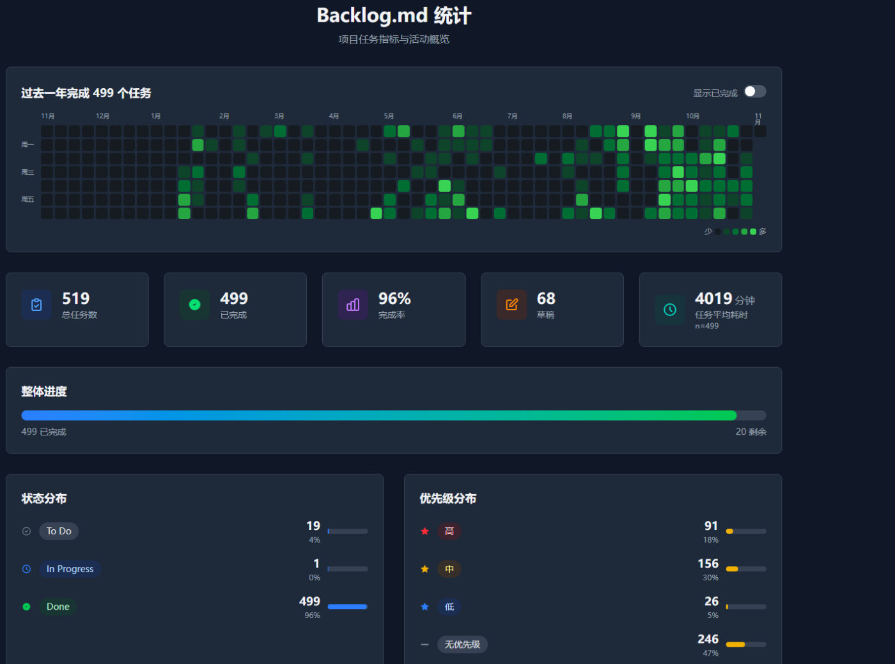
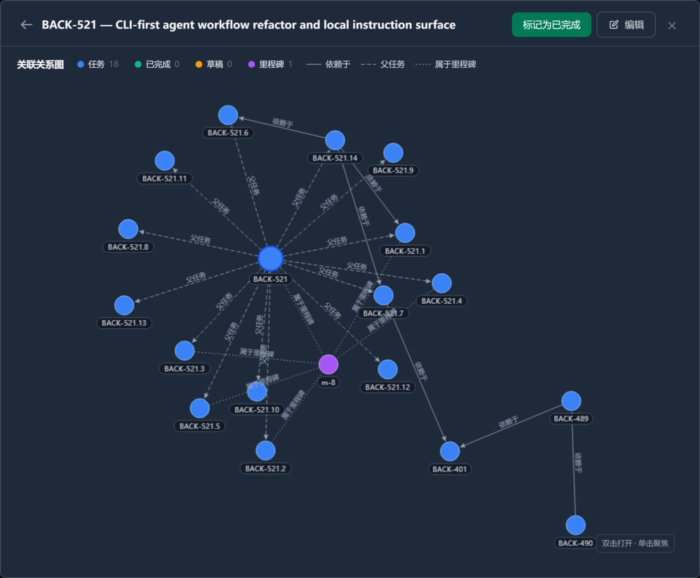
每一步的产物都是仓库里的文件，所以在任何一步停下来、改主意、换个 Agent 接着做，状态都不会丢。
在任意 Git 仓库里运行一次命令，选择用 CLI 指令还是 MCP 接入你的 AI 工具。也可以跳过 AI，只当任务管理器用。
把想法告诉 Agent，它建任务、写验收标准，再研究代码库写出实施计划，然后停下来等你批准。
看 diff、跑测试、核对验收标准。通过后写下最终总结，知识自动进入 Wiki，成为下一步的输入。
看板、甘特、任务表直接读写 Markdown 文件；图谱查询跑在由这些文件派生的图谱上；文档里的 SQL 查的是项目内登记的 DuckDB 库。它们都直接读写仓库里的数据，不需要把内容导出到别处。
backlog browser 按状态分列展示任务卡片，拖动即改状态，改动直接写回 Markdown 文件。
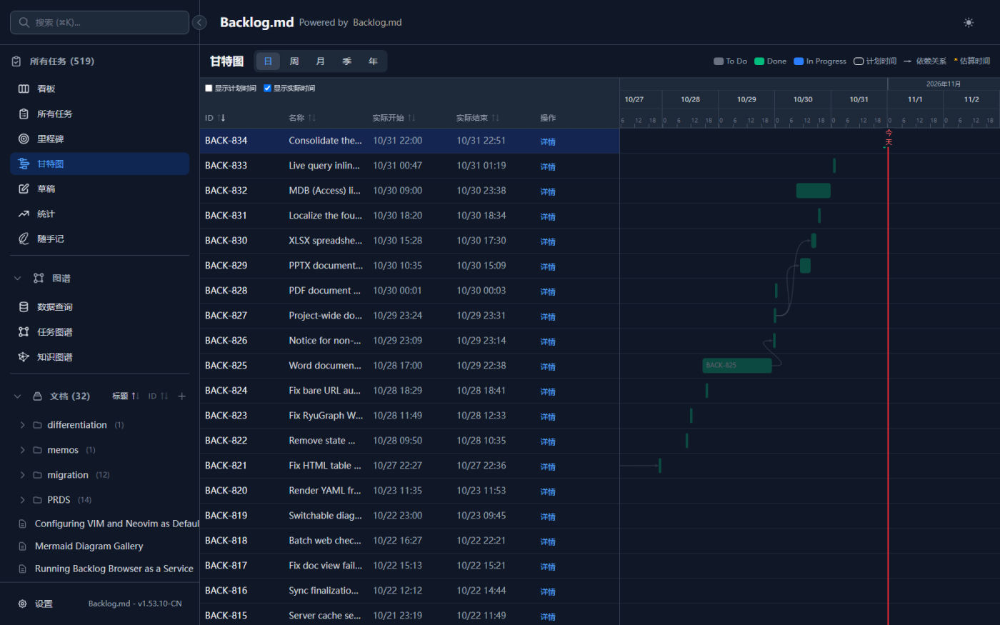
计划时间画成边框，实际时间填成实心条，五种时间粒度可切换，延期和提前一眼看出来。
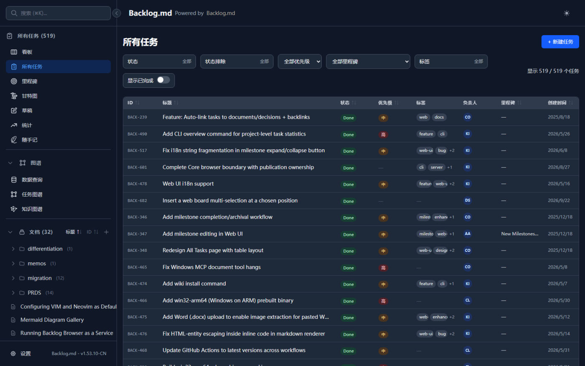
表格、看板、树形结构随时切换，按状态、标签、负责人、里程碑筛选，模糊搜索跨任务文档和决策。
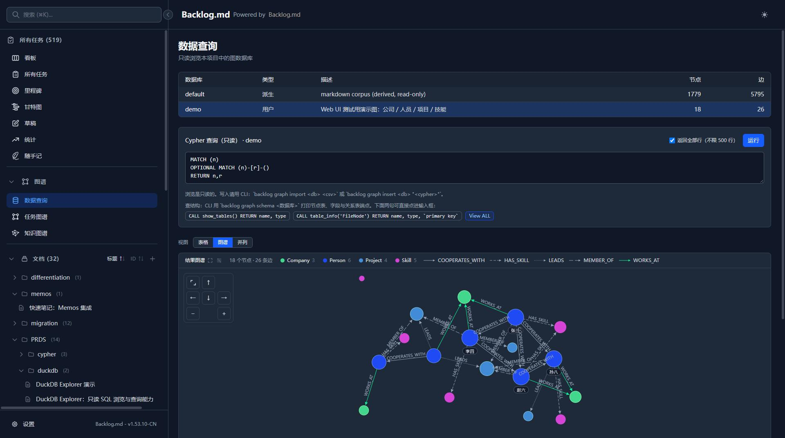
对项目内的知识图谱执行只读 Cypher，配好数据源就能查，结果以表格或图形呈现。
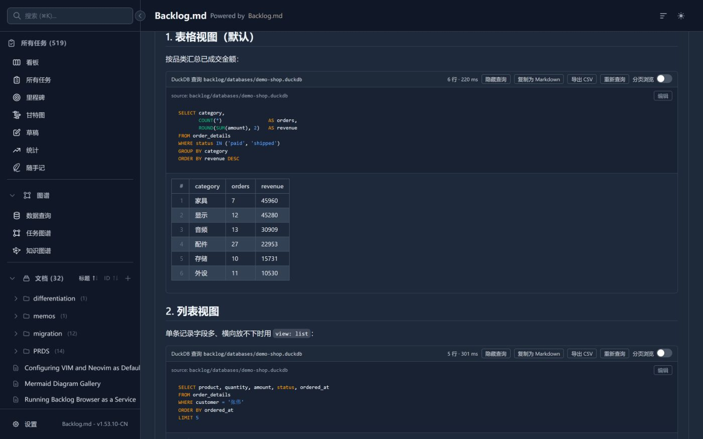
在 Markdown 正文里写一条 SELECT，阅读视图会实时跑出结果表，可复制为 Markdown、导出 CSV，也能分页浏览。
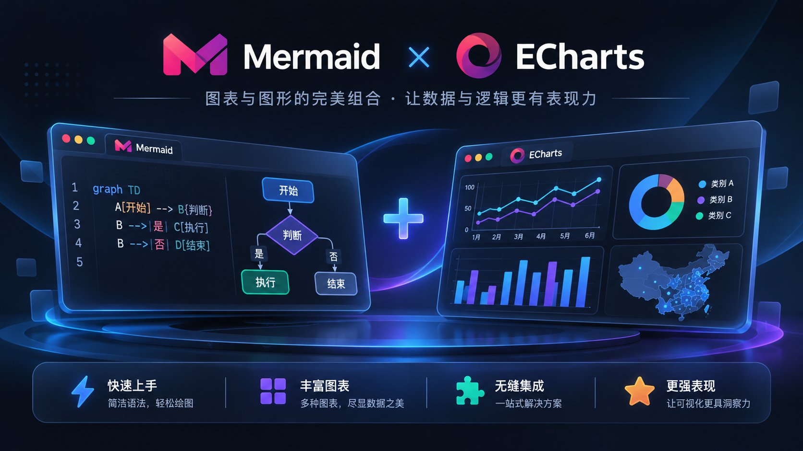
数据查询的结果能直接出图：把查出的数据接上 Mermaid 或 ECharts，阅读视图原地渲染成流程图、时序图或交互式图表；同一份数据，文档、看板、Wiki 共用。
仓库里的 Word、Excel、PPT、PDF 不用导出就能预览，排版、表格、幻灯片逐页呈现，不跳转、不另存。
状态怎么走不该由工具说了算。哪些状态可以互转、哪些算收尾，都在设置页里自己画 —— 开发流程能用，资讯分析、论文编写这类非编码工作一样能定制。
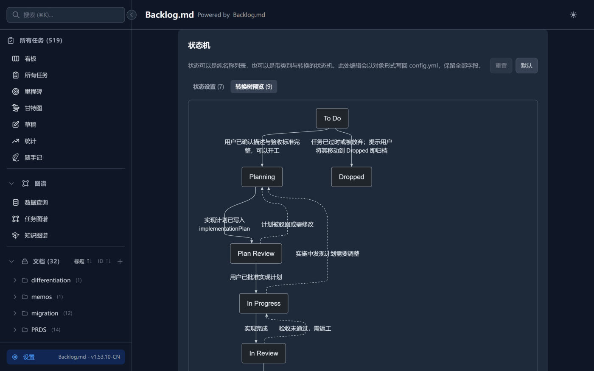
onStatusChange 可以接一条 shell 命令，校验、通知、同步都随你接
灵感总是来得突然、走得更快。一闪而过的念头，先钉进 Memos，不打断手上的活；笔记和任务、文档一样落在仓库里，能被搜索、反查和归档。
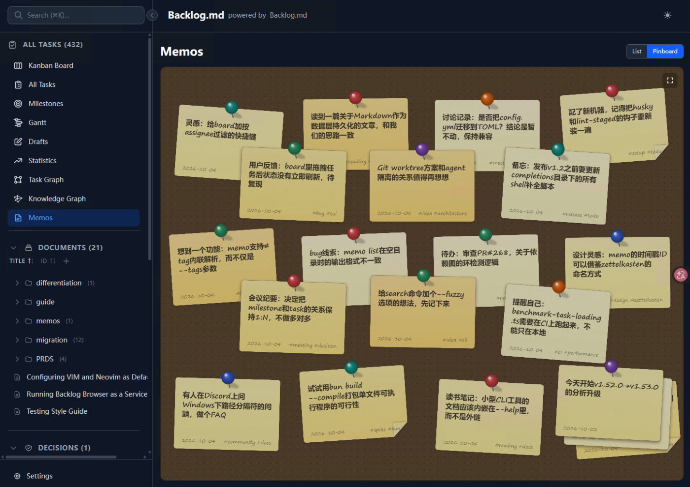
archive/memos，历史随时翻回来
终端、Web 界面、MCP 与 CLI 读写同一批 Markdown 文件，随时切换。
CLI 指令是默认的接入方式，任何能执行命令的 Agent 都能直接开始工作。偏好 MCP 时，backlog init
也可以自动完成配置。
从快速开始到图谱查询，文档和项目放在同一个仓库里维护。
52 页结构化手册：安装初始化、任务管理、看板、Web 界面、AI 集成、图谱与数据查询。
阅读用户手册项目自身的 LLM Wiki：概念、决策、模式与执行记录，知识沉淀工作流的真实范例。
在 GitHub 上阅读完整命令参考：任务、搜索、看板、文档、决策、里程碑、备忘录与图谱命令。
在 GitHub 上阅读配置项全览：跨分支检查、自动提交、ID 格式化、编辑器集成与完成定义默认值。
在 GitHub 上阅读不需要。Backlog.md 的数据全部存放在项目本地的 backlog 文件夹里，没有云端账号，也没有订阅要求，离线也能正常使用。
任务就是仓库里的 Markdown 文件，和代码一起进版本控制，可以被 diff、review、搜索和归档。同时它面向 AI Agent 设计：内置 CLI 指令与 MCP 接口，Agent 能直接按任务工作，人类在关键节点审查。
任何能执行命令行或支持 MCP 的工具都可以，包括 Claude Code、Codex、Gemini CLI、Kiro 和 Cursor。推荐用 CLI 指令接入，Agent 运行 backlog instructions overview 就能拿到当前工作流说明。
项目内的 backlog 目录，默认是 backlog/ 或 .backlog/，也可以在 backlog.config.yml 里配置成其他项目相对路径。任务本身是可直接阅读的 Markdown 文件。
可以。终端命令和 Web 界面都能独立使用，所有改动与 Markdown 文件保持同步。你随时可以在手动工作流和 AI 辅助之间切换，两者基于同一批文件。
在已有仓库里直接运行 backlog init 即可。没有 Git 用 backlog init --no-git 创建纯文件系统项目，此时跨分支检查、远程操作和自动提交会被禁用。
CLI 指令是默认推荐方式，先运行 backlog instructions overview 就能拿到当前版本的工作流说明，不会与实现细节脱节。如果你更偏好 MCP，backlog init 可以自动配置 Claude Code、Codex、Gemini CLI、Kiro 或 Cursor。
默认只绑定 127.0.0.1，仅本机可访问。需要局域网访问时才用 backlog browser --host 0.0.0.0，但 API 未做认证，不建议在不可信的网络里开放。
可以。任务随代码进版本控制，用正常的代码评审流程推进即可。自动提交默认关闭，适合需要精细控制提交历史的多人场景；单人自动化工作流可以打开它，获得一操作一提交的干净历史。
MIT 许可证，个人和商业用途都免费，只需保留出处署名。
macOS、Linux 和 Windows 都支持。可以用 npm、bun、Homebrew 或 Nix 安装。
在项目里运行 backlog agents --update-instructions，在弹出的列表里勾选要更新的文件（AGENTS.md、CLAUDE.md、GEMINI.md、.github/copilot-instructions.md），命令会把当前版本内置的 Backlog.md 指令块写进这些文件，同时保留你在管理块之外自己添加的内容。重新执行 backlog init 也会一并更新这些文件；如果某个文件里还没有 Backlog.md 指令块，命令会自动补上。
内置两个 Agent 技能：llm-wiki-for-backlog 把 backlog 源增量编译成可查询的项目知识库（wiki）；task-migration-architect 在 fork 项目里分析上游变更、按任务驱动完成分支合并。安装命令分别是 backlog wiki install <agent> 和 backlog migrate install <agent>，<agent> 填 claude、codex 或 agents。已存在同名技能时用 --force 覆盖，加 --dry-run 可只预览不写入。
支持 Claude Code / Desktop（.claude/skills/）、OpenAI Codex CLI（.codex/skills/）和通用 Agents 目录（.agents/skills/），三个目录通过符号链接共享同一份技能文件，Windows 上会回退为直接复制。Backlog.md 升级后，重新执行对应的安装命令并加 --force 即可把技能刷新到新版本，无需手动改动。
MIT 开源，数据在你自己的仓库里，不需要账号，也没有云端依赖。装完跑一次 backlog init 就能看到效果。
同一个包也可以用 bun 安装：bun add -g @kuwork/backlog.md